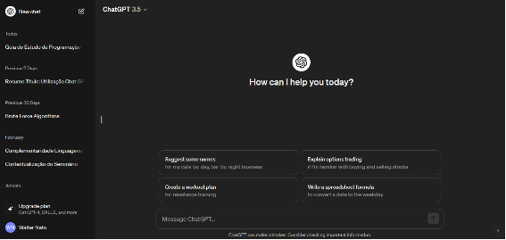
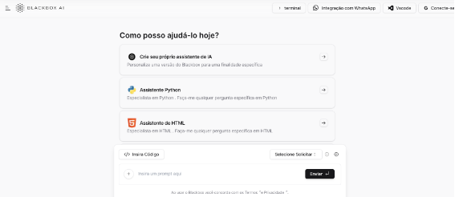
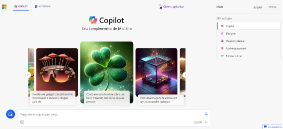
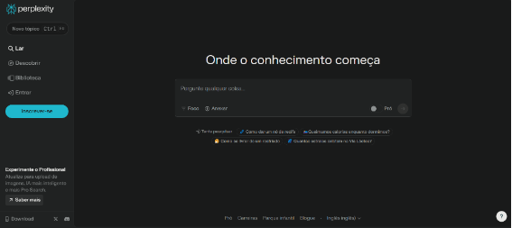

Módulo 1: Introdução e Fundamentos
Um Guia de estudo de programação com inteligência artificial
Conceitos Básicos de Programação
chatgpt

blackbox

copilot

perplexity

Essas ferramentas desempenharão o papel de um professor virtual para o aluno, onde quaisquer dúvidas ou perguntas podem ser direcionadas a elas. O objetivo é fornecer um suporte educacional abrangente durante sua jornada de estudos em programação. Ao mencionar outras IA, como BackBox, Copilot e Perplexity AI, buscamos oferecer uma visão mais ampla das opções disponíveis, permitindo que você escolha a ferramenta que melhor se adapte às suas necessidades. Agora que o acesso foi realizado, podemos dar início ao guia de estudo, começando com a primeira etapa, introdução e fundamentos.
Agora clique no bloco azul para explorar nossa estrutura de módulos e iniciar seus estudos: